番外篇|带你康康......
热血少年为何屡屡夜不归宿
战队队员头发为何频频脱落
文体清晨为何总是出现几具“躺尸”
315半夜又为何总是传出键盘敲击声
这一切的背后究竟隐藏着什么
到底是道德的沦丧还是对战车的渴望
......
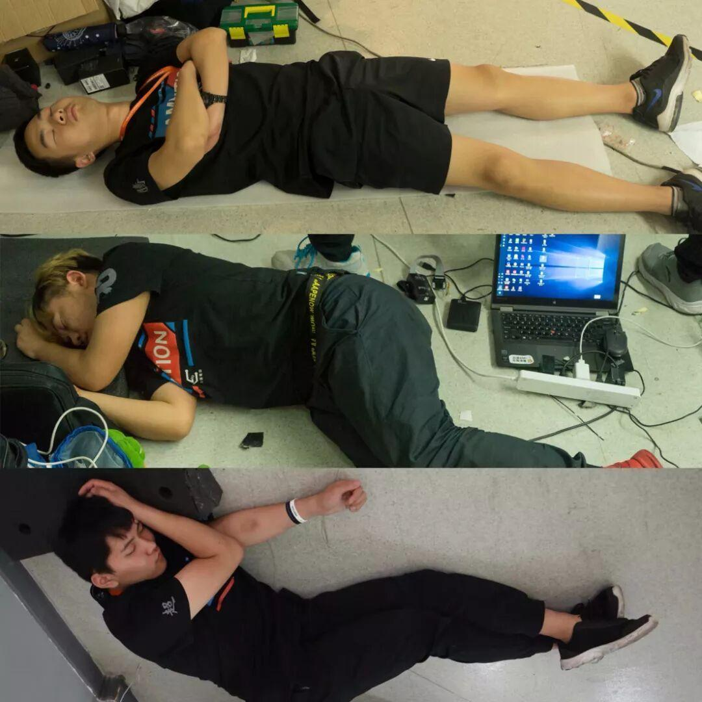
官方表明：现已侦破
原来是一群二十左右的年轻人
正在亲手打造自己的机甲梦
（通俗易懂：做比赛战车）
We are Ambition战队
skr！skr！skr！
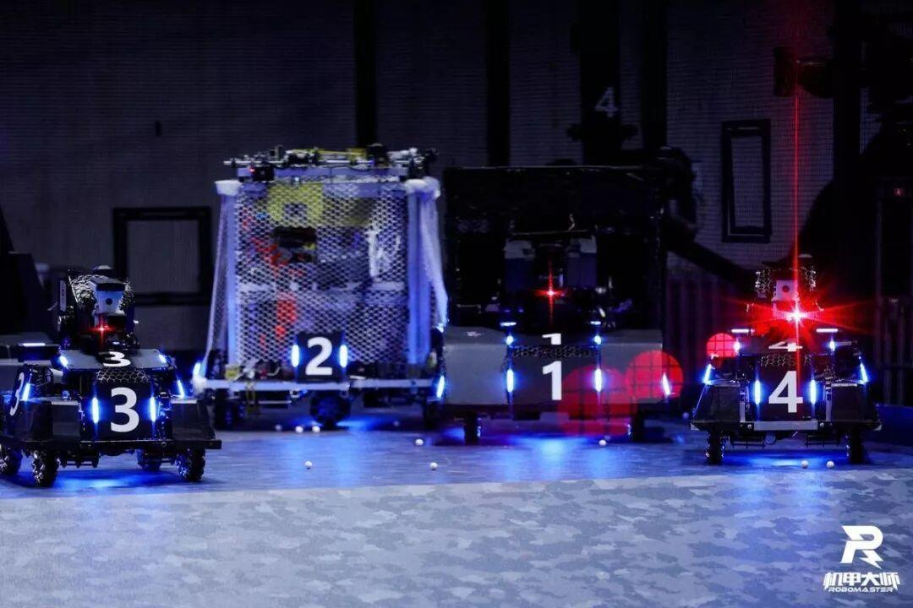
（2019赛季Ambition参赛机器人）
说实话
...
我们的战车
看起来是不是还挺酷？

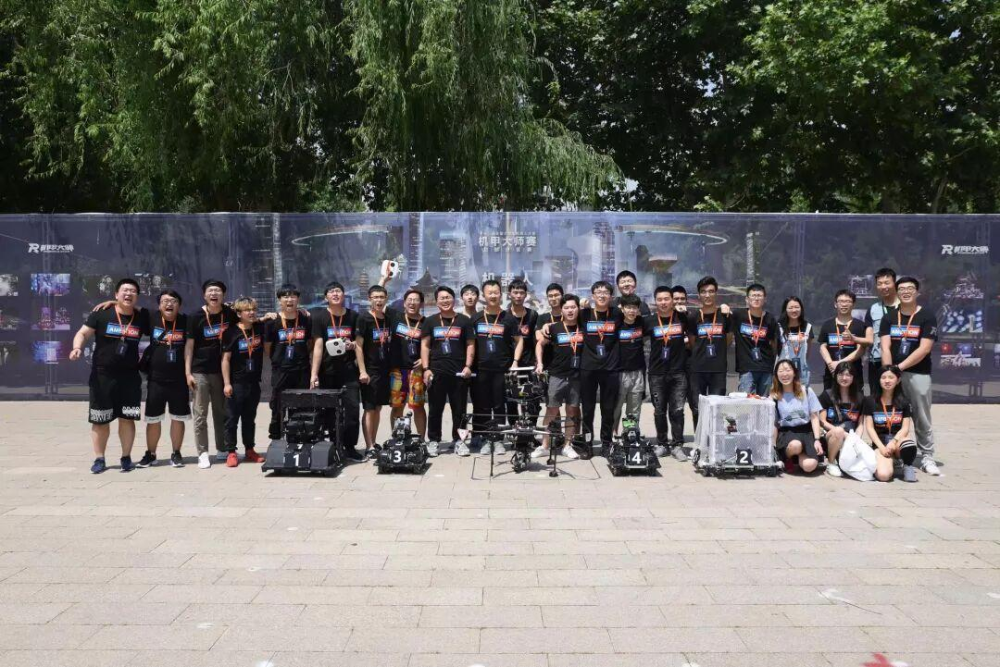
（2019赛季参赛队员大合照）
为RoboMaster机甲大师赛而生的Ambition战队
至今成立已有四个年头了
今年六月 我们终于成功晋级淘汰赛
那一刻 所有的努力都值得
道阻且长 但一路前行终将到达
这一路 比你优秀的人会很多但我们只和自己比
你有多优秀 成功就有多配得上你
搞点正经的 不然怕你不了解
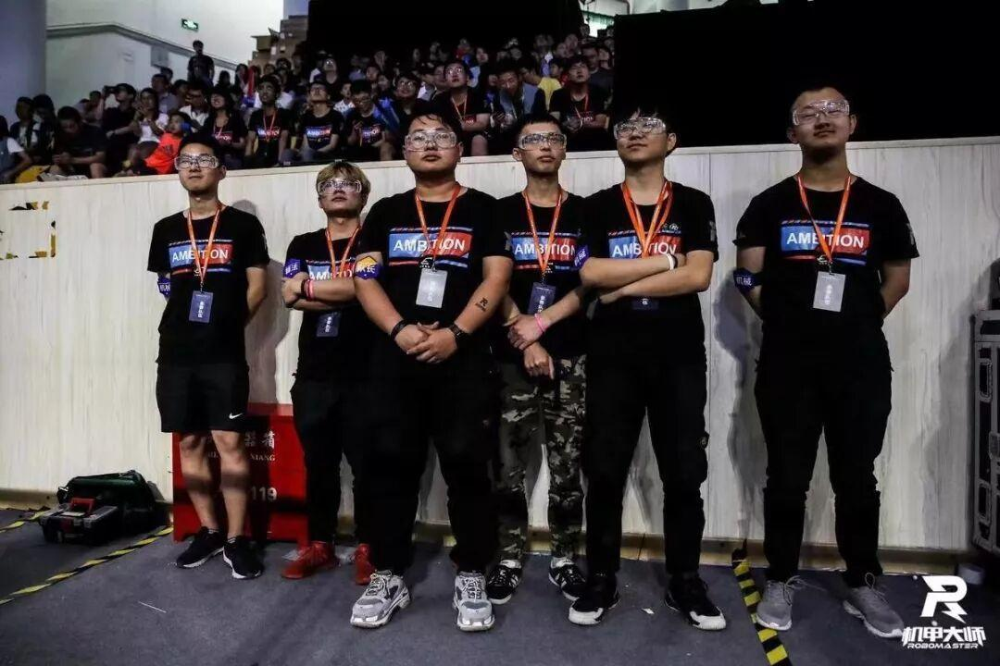
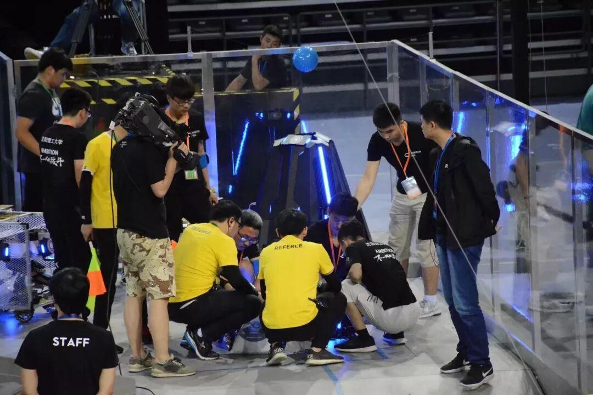
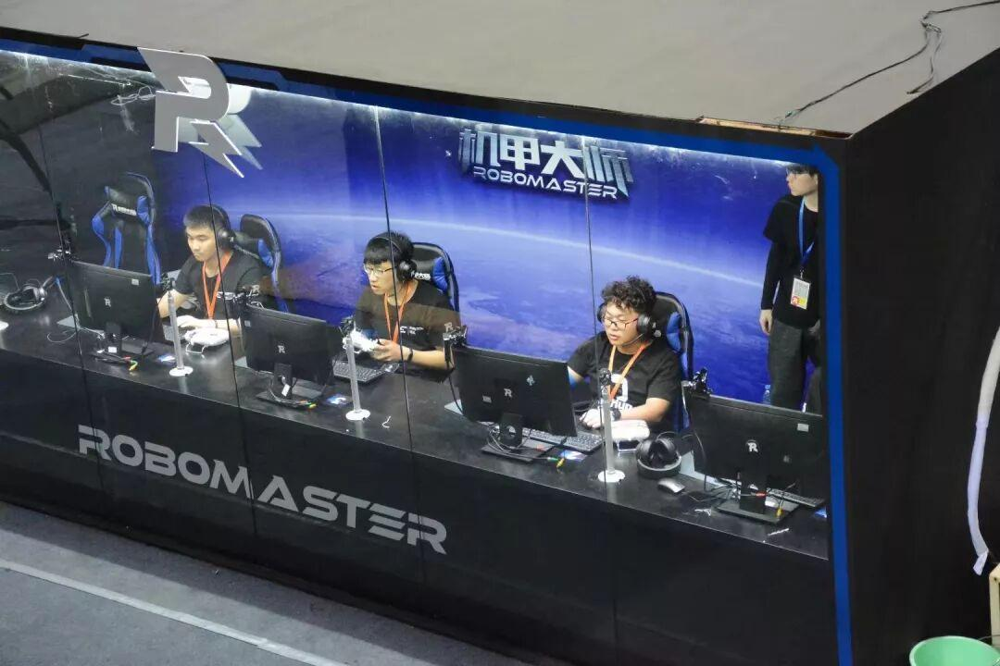
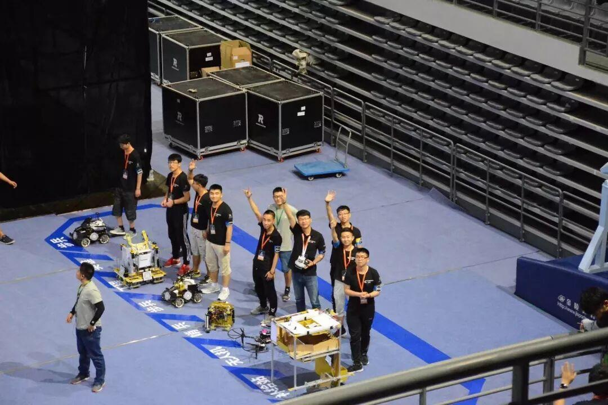
（2019赛季比赛图片合集）

四载春秋过 铸血为英雄
2020赛季已经启动 又一批队员正为此做准备
备战中期 紧张 累
每周的任务考核 无疑是最能振奋大家的时刻
上个赛季有经验的学长学姐都留下来指导大家
付出时间 付出精力
只为了战队能在此赛季有个更好的成绩
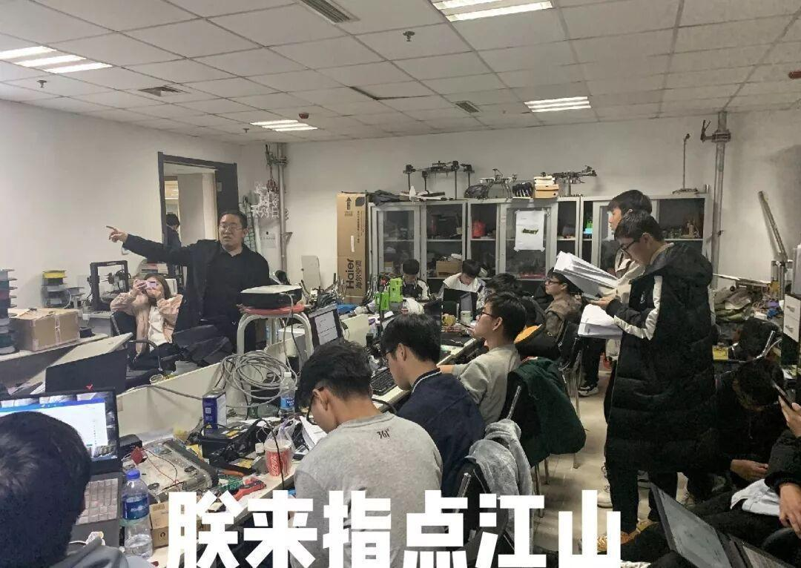
👇👇👇
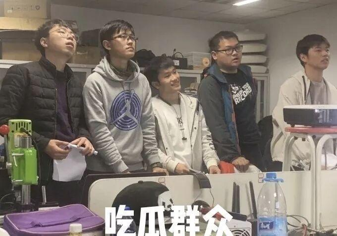
（认真听讲）
👇👇👇
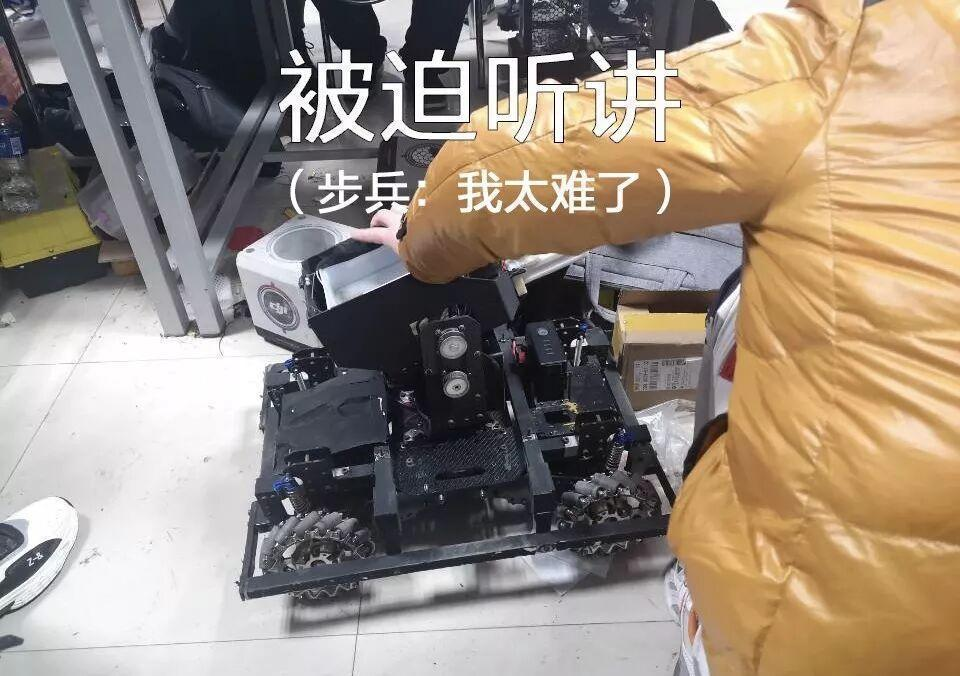
（此表情包表示现文体现状）
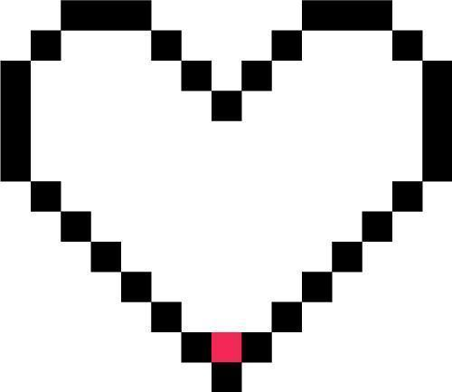
一个个赛场上的热血少年
是否颠覆了你心中理工男的形象
不不不
理工男的“闷骚”我们还是有的
👇👇👇
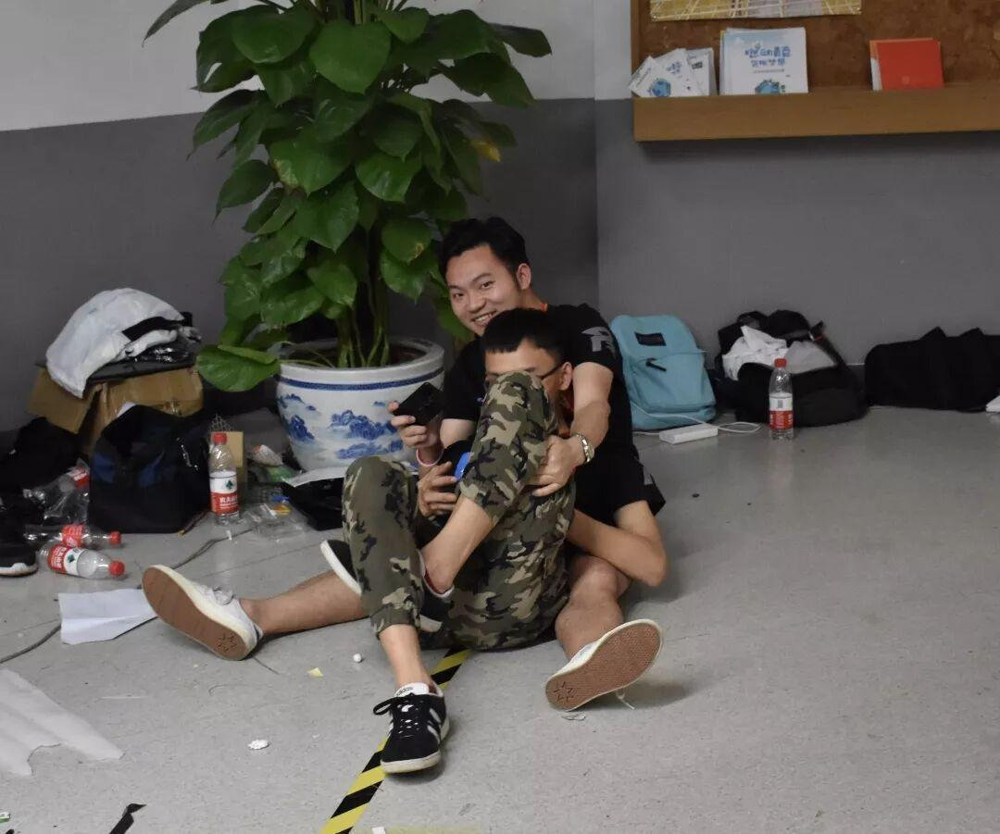
同学，我们的“搞机”可不是这个意思...
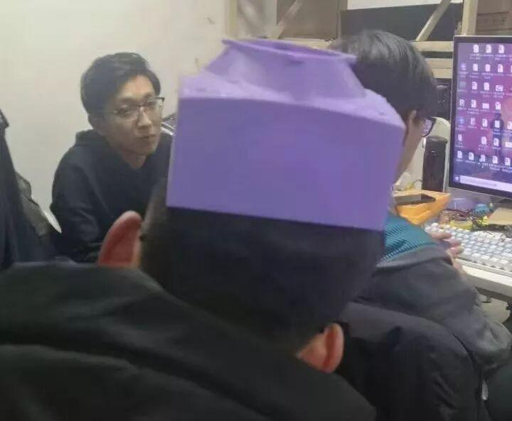
弹仓：假如我是绿色...
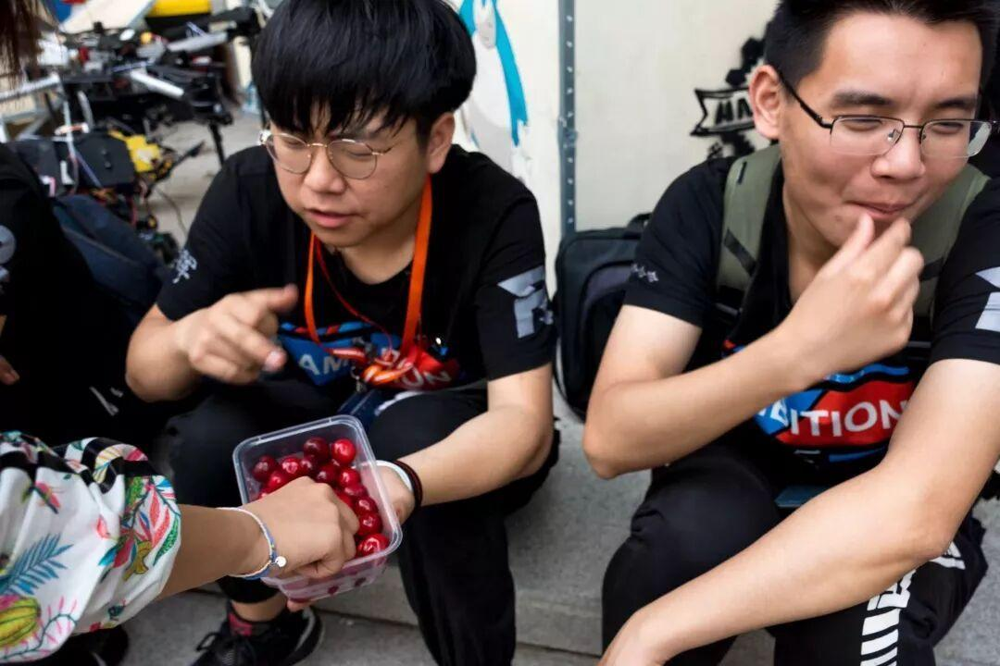
走开，我的樱桃还给我的好“机”友吃
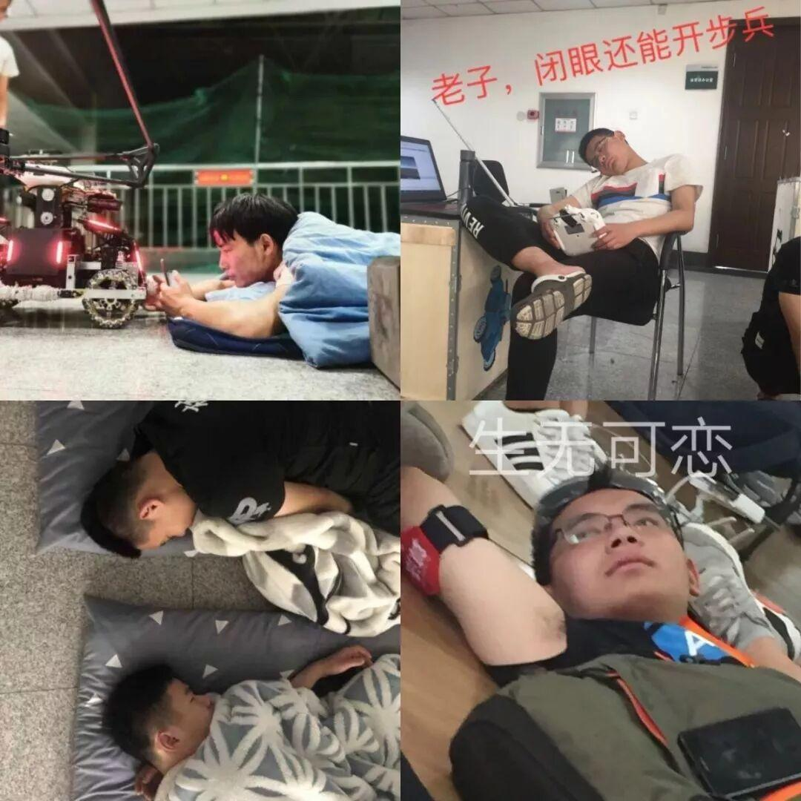
睡吧，别人享受的，我们梦里也会有的
感觉身体被掏空
成功从不缺乏等待它的人
只是缺乏一颗积极进取的心
我们之间的故事
是来源于梦想起航的地方
AMBITION 战队
不忘初心 ❤ 方得始终
文案|杜遇涵
排版|杜遇涵
图片|信息部